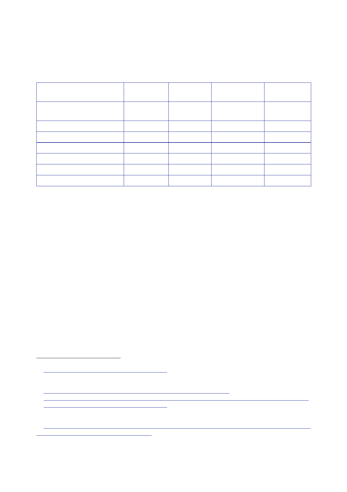

15.1 | Civilian
personnel
883.
Secondments to
the CPA appear to have peaked in April 2004, with
approximately
260 UK
civilians working for the organisation across Iraq.575
22
May
25
July
14
January
21
April
Total UK
secondments to the
CPA
61
100
143
260
Baghdad
percentage
of UK total
50
65
82
65
50
120
35
46
South
percentage
of UK total
11
30
18
30
72
120
50
46
Other
CPA
percentage
of UK total
576577578579580
05
21
20
15
8
884.
The British
Office Baghdad opened on 5 May 2003.581
Originally
staffed by a team
of four, by
late summer 2003 it had eight UK‑based staff.
885.
Information on
the location of personnel outside Baghdad and Basra during
the
CPA period
is sparse.
886.
A contact list
for UK personnel present in Iraq on 30 December 2003
listed
51 people
(civilian and military) deployed to the CPA Governorate Teams
(GTs)
across
Iraq:
•
Basra 22
(including a UK military close protection team);582
•
Dhi Qar
4;
•
Wasit
6;
•
Ta’Mim
(Kirkuk) 7;
•
Maysan 10
(including a UK military close protection team);
•
Muthanna 1;
and
575
Letter
Tebbit to Turnbull, 21 April 2004, [untitled].
576 Annotated
Agenda, 22 May 2003, Ad Hoc Group on Iraq Rehabilitation meeting,
‘Annex C,
UK Secondees
to ORHA’.
577
Letter Jay
to Turnbull, 25 July 2003, ‘Iraq: UK support for
reconstruction’.
578
Letter Jay
to Turnbull, 14 January 2004, ‘Iraq – Civilian Staffing’ attaching
Paper, ‘Iraq: Civilian Staffing’.
579
Letter
Tebbit to Turnbull, 21 April 2004, [untitled].
580
Inquiry
estimate. No figure was given by Sir Michael Jay, who referred
to “small numbers” in CPA
regional
offices in central and northern Iraq.
581
Minute IPU
[junior official] to PS [FCO], ‘Iraq: Briefing for Visit – 25‑26
November 2003’ attaching Paper
[unattributed],
‘Background on Other Issues’.
582
The Basra
Governorate Team was not part of CPA(South).
583
Paper
[unattributed], 12 January 2004, ‘UK Personnel Deployed (As at 30
Dec 03)’.
395